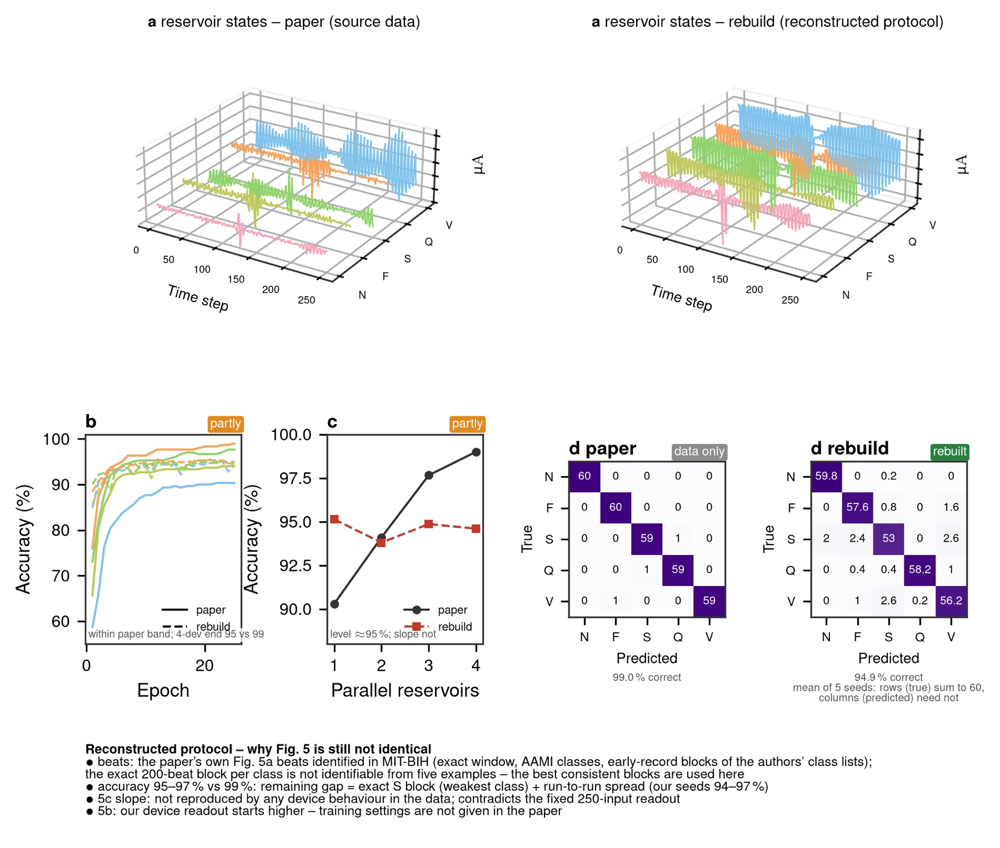

Research / ZnPS3 ECG reservoir
Project
Rebuilding a reconfigurable ZnPS₃ memristor reservoir for ECG classification
A full rebuild of a 2025 Nature Communications reservoir from the paper's source data, where the original code only prepared the data.
94.9%5-class ECG accuracy, my rebuild
99.0%accuracy reported in the paper
MIT-BIHarrhythmia database
The problem
Ji et al. (Nature Communications, 2025) used one ZnPS₃ material as both neuron and synapse. Their released code only prepared data, so the device models, reservoir and training had to be rebuilt.
What I did
- Fitted volatile (neuron) and synaptic models only to the paper's Source Data workbook.
- Rebuilt the reservoir, readout and training, and identified the paper's own example ECG beats in the MIT-BIH database.
- Tested which protocol choices reproduce the reported accuracy, and checked how much single runs vary.
What I learned
The remaining gap is explained by data selection and run-to-run spread; tuning a model until it hits 99% would have been matching by construction.

- Status
- Completed · study project
- Period
- 2026
- Tools
Open to collaboration
Let's build something together.
Open to research collaborations, opportunities and conversations about memory devices, AI hardware, youth development, or scholarships and studying abroad.